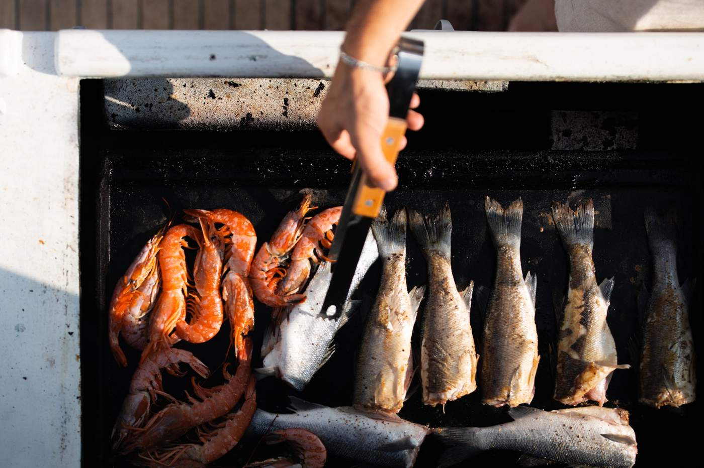

Tiger prawns on the grill, the yacht at anchor in a warm cove in the Bay of Kotor, mountains all around. It works. Not because of the recipe — the recipe is ordinary. Because of the salt air and because lunch lasts as long as you want, not the forty minutes a restaurant gives you. The stern grill is an add-on to the charter. You can come without it, but almost everyone with kids or a special occasion orders. It's not a "feature" — it's a normal lunch, just on the water.
"Fish on the grill tastes better when it was caught that morning. And when you can eat it in swimwear with your feet in the water. In a restaurant no one does that — you have to dress up, order, wait. We don't have that part." — Captain Alexey
The standard set for 4–8 guests: sea bream or sea bass — fresh, that morning, a kilo for two; tiger prawns — large, on the grill in their shells; vegetables — zucchini, peppers, aubergine, sometimes mushrooms; potatoes baked in the embers, plain; local hard cheese on a board; bread — flatbread from a village bakery; pršut, the Montenegrin prosciutto, sliced; olives, mangala style, in oil. That's the base. For larger groups we add more fish or octopus. On request we do a vegetarian set — the grill works well with halloumi, mushrooms, zucchini.
In the morning, in Tivat — the fish market. Sea bream and sea bass from the same fisherman who has given us his morning catch for fifteen years. Prawns from there too. Vegetables — at the market next door, from a woman who knows our steward by name. In Kamenari on the way — oysters. We order them from the yacht, they arrive on a small boat in about twenty minutes. That's a separate gastro moment, not lunch: the oysters get opened on deck, we eat them with lemon and a drop of tabasco. Everything is local, same-day. Nothing imported, nothing thawed.
Standard — the steward. Trained on board. He handles the grill, cleans the fish, cuts the vegetables, plates everything. That's the standard service, no extra charge. For a special occasion or a larger group (10+ guests) — a private chef as an add-on (€300). Then it's an extended menu: 4 courses with wine pairing, agreed two days before the charter. The chef comes on board with the ingredients, cooks on the spot, serves. The difference is simple: the steward is "a good lunch on a yacht". The chef is "restaurant-level on a yacht". Most guests are fine with the first.
Not while cruising. We drop anchor in a quiet cove and have lunch for forty minutes to an hour. Favourite spots for an anchored lunch: a cove near Perast — sheltered, shallow, view of Our Lady of the Rocks; Žanjic — near the Blue Cave on the western Luštica, good for a cave-day route; Morinj — by the mountain springs, water slightly colder but very quiet; Duraševići — across from Stradioti, with a pontoon if you want to step ashore after. The captain picks the spot based on the day's weather — where there's no wind, where the chop won't bother lunch.
Standard — white wine, Vranac Beli or Krstač, local Montenegrin. €15–25 a bottle, we bring it. A few bottles in the fridge on board. Prosecco if you want it — there. Champagne on request (Veuve Clicquot, Bollinger — add-on). Non-alcoholic always: lemonade with fresh lemons, sparkling water, mineral water. Tell us at booking what you like — we bring those specific bottles. No markup for delivery, you pay by what you actually drink.
Standard lunch — €40–60 per person depending on the dishes and group. That includes: fish, prawns, vegetables, bread, olives, cheese, pršut, standard wine. With oysters from Kamenari — add €15–20 per person. With a private chef — €300 flat for the charter, plus ingredients by what's used. Paid at the end of the charter — cash or card. No pre-payments for food.
Don't want to cook on board? We pull into a coastal restaurant: Perast — several restaurants on the waterfront, the owners know our yacht, you can book a table from the water; Stoliv — a small village between Perast and Kotor, the Conte restaurant has a terrace; Bigova — a fishing village on Luštica, one real fish restaurant with no menu; Rybarsko Selo — if we're heading to the Blue Cave, lunch on the dock. Prices roughly the same (€30–50 per person). But we spend an hour and a half on shore — that eats into your time on the water.
In strong wind (mistral, easterly 15+ knots) the stern grill doesn't work — smoke and flame can't be controlled, fire safety. On those days we switch to cold dishes: cheese, pršut, bread, vegetables, cold seafood — also good, just a different scene. If we plan a grill and the day's weather is like that, we warn you in advance. You can either switch to a cold menu or pull into a restaurant ashore. And: the smell of fish and smoke from the grill stays on clothes. Normal for an outdoor BBQ, but if you have dinner in Kotor afterwards — bring a spare T-shirt. There's laundry on board but it takes time.
The grill lunch is added at booking or at most a day before the charter. We agree the menu over WhatsApp the night before — we send photos of the morning catch and you choose. In peak July–August — sometimes we can't get top langoustine or octopus (the restaurants take them). Then we switch to prawns or sea bream.
No auto-responders, no forms with red asterisks. The route is agreed with you personally — usually within 2 hours during the season (May–October), faster off-season.
Request Dates